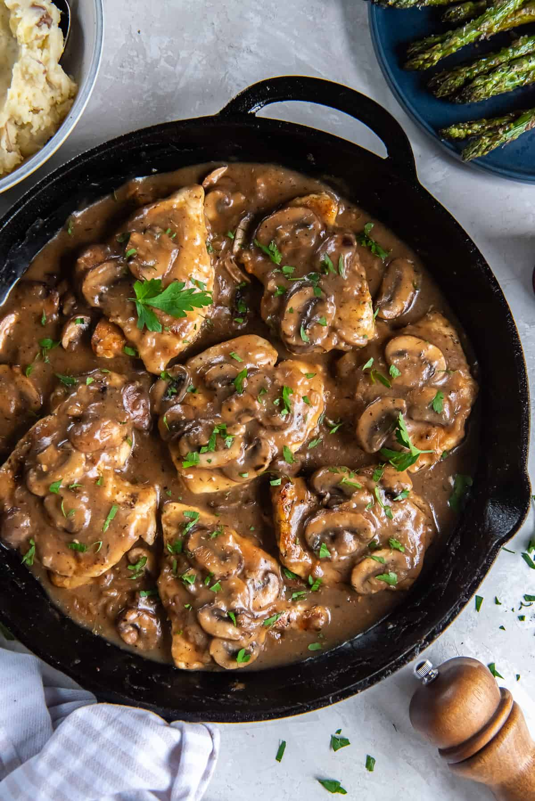

Chicken Marsala

Quick and easy for a weeknight dinner and sophisticated enough for company.
Chicken Marsala is an Italian-style recipe for tender pan-friend chicken breasts
in a sweet Marsala wine and mushroom sauce.
Ingredients
- 1/4 cup all-purpose flour
- 1/2 teaspoon salt
- 1/4 teaspoon ground black pepper
- 1/2 chopped fresh oregano
- 4 medium skinless, boneless chicken breast halves - pounded 1/4 inch thick
- 4 tablespoons butter
- 4 tablespoons olive oil
- 1 cupe sliced mushrooms
- 1/2 cup Marsala wine
- 1/4 cup cooking sherry
Steps
- In a bowl, mix together flour, salt, pepper, and oregano.
- Coat chicken pieces in flour mixture.
- In a large skillet, melt butter in olive oil over medium heat. Place chicken
in the pan, and lightly brown.
- Flip the chicken pieces and add mushrooms. Pour in wine and sherry.
- Cover skillet; simmer chicken 10 minutes, turning once, until juices run clear.
- Serve hot an enjoy!
Home